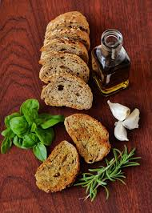

Home
Olive Oil Bread

Description
A quick, easy bread that works well with Italian foods and pastas. Try forming the dough into a round ball or a long loaf for French bread.
Ingredients
- 1/2 cup warm water (110 degrees F/45 degrees C)
- 2 1/4 teaspoons active dry yeast
- 1 teaspoon white sugar/li>
- 1 teaspoon salt
- 4 tablespoons olive oil
- 2 1/2 cups all-purpose flour
Steps
- In a large bowl mix together the warm water (110 degrees), yeast, sugar, salt, and olive oil. Stir in 2 cups of the flour in order to make a soft ball. Knead in additional flour so that dough is soft and not sticky. Place kneaded dough in a medium size greased bowl. Cover and let rise until doubled in size.
- Punch down dough, and form into ball or loaf shape. Place onto a greased cookie sheet. Cover and let rise for 15 to 20 minutes. Preheat the oven to 375 degrees F (190 degrees C).
- Bake in the preheated oven for 30 to 40 minutes, until golden brown.